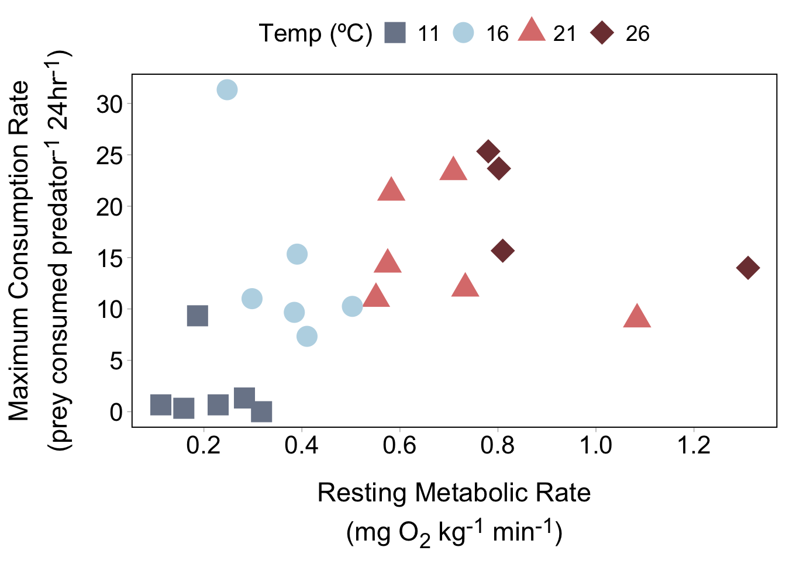
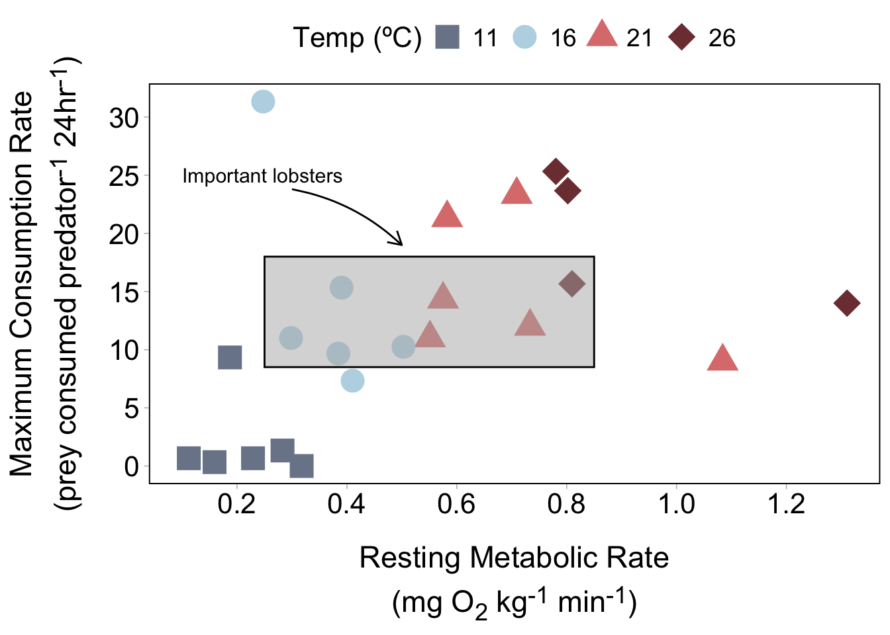
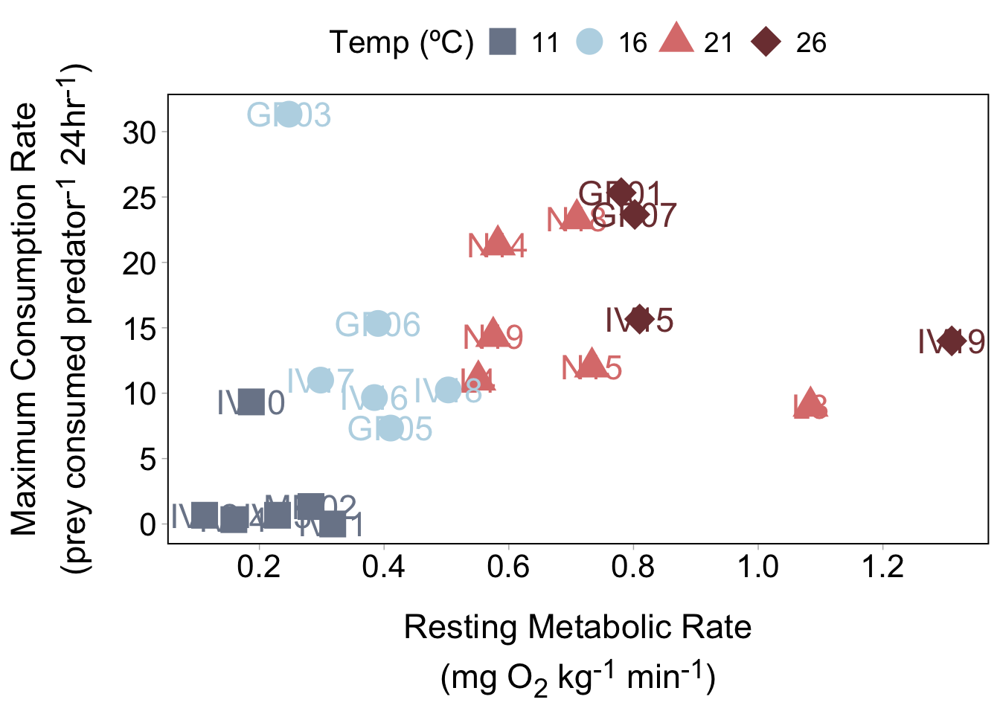
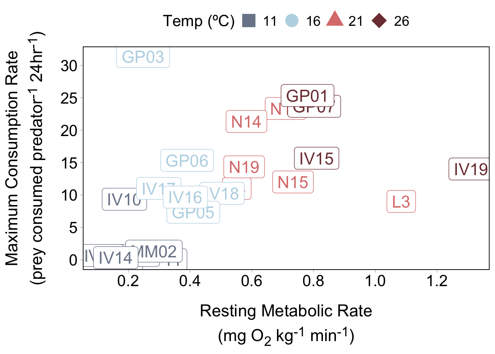
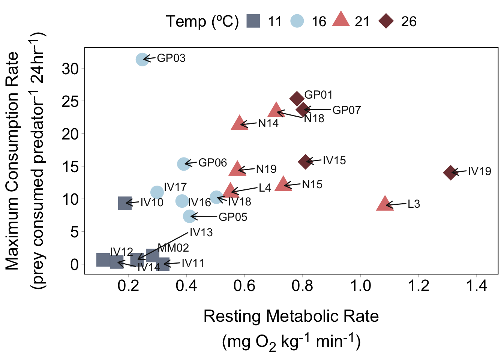
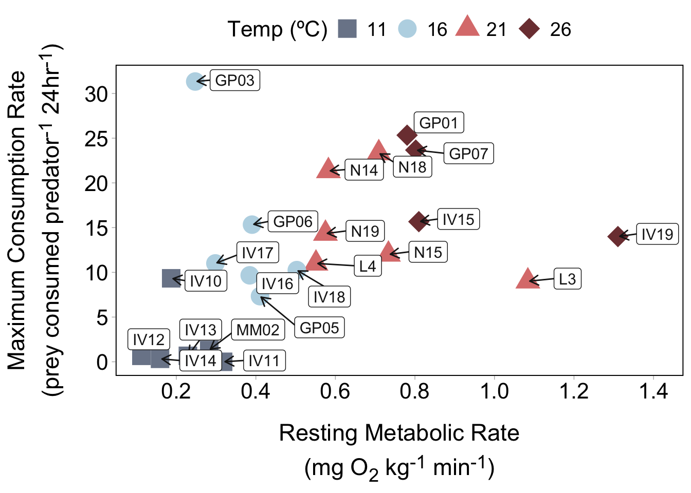
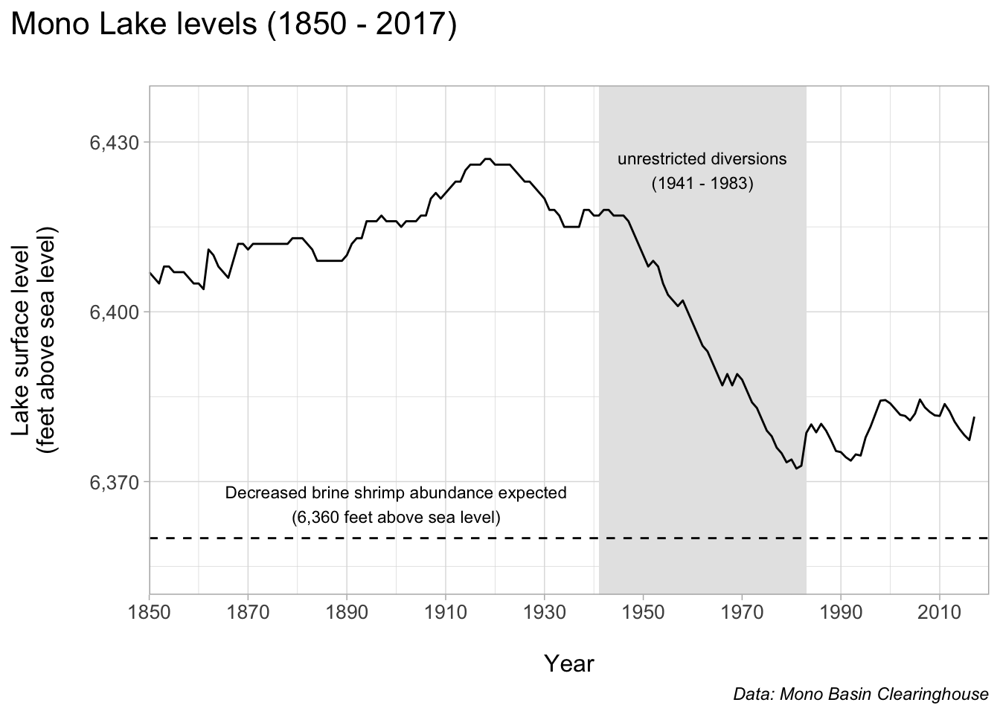

#.........................load libraries.........................
library(tidyverse)
#..........................read in data..........................
# read in Google Sheet ----
lobs <- googlesheets4::read_sheet("https://docs.google.com/spreadsheets/d/1DkDVcl_9rlaqznHfa_v1V1jtZqcuL75Q6wvAHpnCHuk/edit#gid=2143433533") |>
mutate(temp = as.factor(temp))
# alternatively, read in csv file ----
# lobs <- read_csv(here::here("week6", "data", "metabolism-foraging-data.csv")) |>
# mutate(temp = as.factor(temp))
TODO
UPDATE FACECTED PLOT
Note
This template follows lecture 6.2 slides. Please be sure to cross-reference the slides, which contain important information and additional context!
Lobster plot
Setup
Create base plot
#..........................create theme..........................
lob_theme <- function(){
theme_light() +
theme(
axis.title.x = ggtext::element_markdown(size = 16,
margin = margin(t = 10, r = 0, b = 0, l = 0),
lineheight = 1.5),
axis.title.y = ggtext::element_markdown(size = 16,
margin = margin(t = 0, r = 10, b = 0, l = 0),
lineheight = 1.5),
axis.text = element_text(color = "black", size = 14),
panel.border = element_rect(colour = "black", linewidth = 0.7),
panel.grid = element_blank(),
legend.title = element_text(size = 15),
legend.text = element_text(size = 13),
legend.position = c(0.95, 0.95),
legend.justification = c(0.95, 0.95),
legend.box.background = element_rect(color = "black", linewidth = 0.9)
)
}
#..........................create scales.........................
lob_palette <- c("11" = "#7B8698",
"16" = "#BAD7E5",
"21" = "#DC7E7C",
"26" = "#7D3E40")
lob_shapes <- c("11" = 15,
"16" = 16,
"21" = 17,
"26" = 18)
lob_sizes <- c("11" = 6,
"16" = 6,
"21" = 6,
"26" = 7)
#........................create plot text........................
x_axis_lab <- glue::glue("Resting Metabolic Rate<br>
(mg O<sub>2</sub> kg<sup>-1</sup> min<sup>-1</sup>)")
y_axis_lab <- glue::glue("Maximum Consumption Rate<br>
(prey consumed predator<sup>-1</sup> 24hr<sup>-1</sup>)")
#............................plot data...........................
lob_plot <- ggplot(lobs, aes(x = SMR, y = avg_eaten,
color = temp, shape = temp, size = temp)) +
geom_point() +
scale_color_manual(values = lob_palette, name = "Temperature (ºC)") +
scale_shape_manual(values = lob_shapes, name = "Temperature (ºC)") +
scale_size_manual(values = lob_sizes, name = "Temperature (ºC)") +
scale_x_continuous(breaks = seq(0, 1.5, by = 0.2)) +
scale_y_continuous(breaks = seq(0, 35, by = 5)) +
labs(x = x_axis_lab,
y = y_axis_lab) +
lob_theme()
lob_plot
Adding annotations using geom_text() & geom_rect()
- bounding box + text
Adding annotations using annotate()
- bounding box + text + arrow
# create bounding box, text, arrow ----
lob_plot +
annotate(
geom = "text",
x = 0.1,
y = 25,
label = "Important lobsters",
size = 4,
color = "black",
hjust = "inward"
) +
annotate(
geom = "rect",
xmin = 0.25, xmax = 0.85,
ymin = 8.5, ymax = 18,
alpha = 0.5,
fill = "gray70", color = "black"
) +
annotate(
geom = "curve",
x = 0.3, xend = 0.5,
y = 23.8, yend = 19,
curvature = -0.15,
arrow = arrow(length = unit(0.3, "cm"))
)
Annotate each point
# using geom_text() ----
lob_plot +
geom_text(aes(label = lobster_id),
size = 6,
show.legend = FALSE)
# using geom_label() ----
lob_plot +
geom_label(aes(label = lobster_id),
size = 6,
show.legend = FALSE)
# using ggrepel (text) ----
lob_plot +
ggrepel::geom_text_repel(aes(label = lobster_id),
size = 4,
color = "gray10",
nudge_x = 0.1, nudge_y = 0.3,
arrow = arrow(length = unit(0.25, "cm")))
# using ggrepel (labels) ----
lob_plot +
ggrepel::geom_label_repel(aes(label = lobster_id),
size = 4,
color = "gray10",
nudge_x = 0.1, nudge_y = 0.3,
arrow = arrow(length = unit(0.25, "cm")))
Use annotate() to label a few points
- ID + arrow
# label 2 points with lobster ID & arrow ----
lob_plot +
annotate(
geom = "text",
x = 0.3, y = 20.1,
label = "IV10",
hjust = "left",
size = 5
) +
annotate(
geom = "curve",
x = 0.29, xend = 0.184,
y = 20, yend = 9.43,
arrow = arrow(length = unit(0.3, "cm")),
linewidth = 0.6
) +
annotate(
geom = "text",
x = 1.19,
y = 5.25,
label = "IV19",
hjust = "right",
size = 5
) +
annotate(
geom = "curve",
x = 1.2, xend = 1.31,
y = 5, yend = 14,
arrow = arrow(length = unit(0.3, "cm")),
linewidth = 0.6
)
Mono Lake plot
Setup
#..........................read in data..........................
# read in Google Sheet ----
mono <- googlesheets4::read_sheet("https://docs.google.com/spreadsheets/d/1o0-89RFp2rI2y8hMQWy-kquf_VIzidmhmVDXQ02JjCA/edit#gid=164128885")
# alternatively, read in csv ----
# mono <- read_csv(here::here("week6", "data", "mono.csv"))Create base plot
# create base plot ----
ggplot(data = mono, aes(x = year, y = lake_level)) +
geom_line() +
labs(x = "\nYear",
y = "Lake surface level\n(feet above sea level)\n",
title = "Mono Lake levels (1850 - 2017)\n",
caption = "Data: Mono Basin Clearinghouse") +
scale_x_continuous(limits = c(1850, 2020),
expand = c(0,0),
breaks = seq(1850, 2010, by = 20)) +
scale_y_continuous(limits = c(6350, 6440),
breaks = c(6370, 6400, 6430),
expand = c(0,0),
labels = scales::label_comma()) +
theme_light() +
theme(
plot.title.position = "plot",
plot.title = element_text(size = 16),
axis.title = element_text(size = 12),
axis.text = element_text(size = 10),
plot.caption = element_text(face = "italic")
)
Add annotations
- order of annotation layers matters!
ggplot(data = mono, aes(x = year, y = lake_level)) +
annotate(
geom = "rect",
xmin = 1941, xmax = 1983,
ymin = 6350, ymax = 6440,
fill = "gray90"
) +
geom_line() +
labs(x = "\nYear",
y = "Lake surface level\n(feet above sea level)\n",
title = "Mono Lake levels (1850 - 2017)\n",
caption = "Data: Mono Basin Clearinghouse") +
scale_x_continuous(limits = c(1850, 2020),
expand = c(0,0),
breaks = seq(1850, 2010, by = 20)) +
scale_y_continuous(limits = c(6350, 6440),
breaks = c(6370, 6400, 6430),
expand = c(0,0),
labels = scales::label_comma()) +
annotate(
geom = "text",
x = 1962, y = 6425,
label = "unrestricted diversions\n(1941 - 1983)",
size = 3
) +
geom_hline(yintercept = 6360,
linetype = "dashed") +
annotate(
geom = "text",
x = 1910, y = 6366,
label = "Decreased shrimp abundance expected\n(6,360 feet above sea level)",
size = 3
) +
theme_light() +
theme(
plot.title.position = "plot",
plot.title = element_text(size = 16),
axis.title = element_text(size = 12),
axis.text = element_text(size = 10),
plot.caption = element_text(face = "italic")
)
BONUS: annotating a faceted plot
Unfold to see example using our salary plot from lecture 6.1
##~~~~~~~~~~~~~~~~~~~~~~~~~~~~~~~~~~~~~~~~~~~~~~~~~~~~~~~~~~~~~~~~~~~~~~~~~~~~~~
## setup ----
##~~~~~~~~~~~~~~~~~~~~~~~~~~~~~~~~~~~~~~~~~~~~~~~~~~~~~~~~~~~~~~~~~~~~~~~~~~~~~~
#..........................load packages.........................
library(tidyverse)
library(showtext)
#..........................import data...........................
jobs <- read_csv("https://raw.githubusercontent.com/rfordatascience/tidytuesday/master/data/2019/2019-03-05/jobs_gender.csv")
#..........................import fonts..........................
font_add_google(name = "Josefin Sans", family = "josefin")
font_add_google(name = "Sen", family = "sen")
#....................import Font Awesome fonts...................
font_add(family = "fa-brands",
regular = here::here("fonts", "Font Awesome 6 Brands-Regular-400.otf"))
font_add(family = "fa-regular",
regular = here::here("fonts", "Font Awesome 6 Free-Regular-400.otf"))
font_add(family = "fa-solid",
regular = here::here("fonts", "Font Awesome 6 Free-Solid-900.otf"))
#................enable {showtext} for rendering.................
showtext_auto()
##~~~~~~~~~~~~~~~~~~~~~~~~~~~~~~~~~~~~~~~~~~~~~~~~~~~~~~~~~~~~~~~~~~~~~~~~~~~~~~
## wrangle data ----
##~~~~~~~~~~~~~~~~~~~~~~~~~~~~~~~~~~~~~~~~~~~~~~~~~~~~~~~~~~~~~~~~~~~~~~~~~~~~~~
jobs_clean <- jobs |>
# add cols (needed for dumbbell plot) ----
mutate(percent_male = 100 - percent_female, # % of females within each industry was already included
difference_earnings = total_earnings_male - total_earnings_female) |> # diff in earnings between M & F
# rearrange columns ----
relocate(year, major_category, minor_category, occupation,
total_workers, workers_male, workers_female,
percent_male, percent_female,
total_earnings, total_earnings_male, total_earnings_female, difference_earnings,
wage_percent_of_male) |>
# drop rows with missing earning data ----
drop_na(total_earnings_male, total_earnings_female) |>
# make occupation a factor ----
mutate(occupation = as.factor(occupation)) |>
# ---- this next step is for creating our dumbbell plots ----
# classify jobs by percentage male or female ----
mutate(group_label = case_when(
percent_female >= 75 ~ "Occupations that are 75%+ female",
percent_female >= 45 & percent_female <= 55 ~ "Occupations that are 45-55% female",
percent_male >= 75 ~ "Occupations that are 75%+ male"
))
##~~~~~~~~~~~~~~~~~~~~~~~~~~~~~~~~~~~~~~~~~~~~~~~~~~~~~~~~~~~~~~~~~~~~~~~~~~~~~~
## create subset df ----
##~~~~~~~~~~~~~~~~~~~~~~~~~~~~~~~~~~~~~~~~~~~~~~~~~~~~~~~~~~~~~~~~~~~~~~~~~~~~~~
#....guarantee the same random samples each time we run code.....
set.seed(0)
#.........get 10 random jobs that are 75%+ female (2016).........
f75 <- jobs_clean |>
filter(year == 2016, group_label == "Occupations that are 75%+ female") |>
slice_sample(n = 10)
#..........get 10 random jobs that are 75%+ male (2016)..........
m75 <- jobs_clean |>
filter(year == 2016, group_label == "Occupations that are 75%+ male") |>
slice_sample(n = 10)
#........get 10 random jobs that are 45-55%+ female (2016).......
f50 <- jobs_clean |>
filter(year == 2016, group_label == "Occupations that are 45-55% female") |>
slice_sample(n = 10)
#.......combine dfs & relevel factors (for plotting order).......
subset_jobs <- rbind(f75, m75, f50) |>
mutate(group_label = fct_relevel(group_label,
"Occupations that are 75%+ female",
"Occupations that are 45-55% female",
"Occupations that are 75%+ male"))
##~~~~~~~~~~~~~~~~~~~~~~~~~~~~~~~~~~~~~~~~~~~~~~~~~~~~~~~~~~~~~~~~~~~~~~~~~~~~~~
## create plot ----
##~~~~~~~~~~~~~~~~~~~~~~~~~~~~~~~~~~~~~~~~~~~~~~~~~~~~~~~~~~~~~~~~~~~~~~~~~~~~~~
#..........................build palette.........................
earnings_pal <- c("males" = "#2D7787",
"females" = "#FC6B4B",
dark_text = "#0C1509",
light_text = "#4E514D")
#.........................create caption.........................
github_icon <- ""
github_username <- "samanthacsik"
caption <- glue::glue(
"Data Source: TidyTuesday (March 5, 2019) |
<span style='font-family:fa-brands;'>{github_icon};</span>
{github_username}"
)
#........................create subtitle.........................
money_icon <- ""
subtitle <- glue::glue("Median earnings <span style='font-family:fa-regular;'>{money_icon};</span>
of full-time
<span style='color:#2D7787;font-size:20pt;'>**male**</span>
versus <span style='color:#FC6B4B;font-size:20pt;'>**female**</span>
workers by occupation in 2016")
#.................create df with annotation info.................
facet_labs <- data.frame(my_text = c("<span style='color:#2D7787;'>**Males**</span> **make $23,644 more than** <span style='color:#FC6B4B;'>**females**</span> in this female-dominated occupation",
"Male & female probation officers & correctional treatment specialists make about the same",
"Here's another annotation with a horizontal arrow"),
group_label = c("Occupations that are 75%+ female", "Occupations that are 45-55% female", "Occupations that are 75%+ male"),
x = c(70000, 55000, 65000),
y = c(5, 3, 5),
arrow_x = c(80000, 48500, 60000),
arrow_xend = c(80000, 48500, 37500),
arrow_y = c(6, 4, 5),
arrow_yend = c(10, 6.5, 5)) |>
mutate(group_label = fct_relevel(group_label, "Occupations that are 75%+ female",
"Occupations that are 45-55% female", "Occupations that are 75%+ male"))
#..........................create plot...........................
ggplot(subset_jobs) +
geom_segment(aes(x = total_earnings_female, xend = total_earnings_male,
y = fct_reorder(occupation, total_earnings), yend = occupation)) +
geom_point(aes(x = total_earnings_male, y = occupation),
color = earnings_pal["males"], size = 3.25) +
geom_point(aes(x = total_earnings_female, y = occupation),
color = earnings_pal["females"], size = 3.25) +
facet_wrap(~group_label, nrow = 3, scales = "free_y") +
scale_x_continuous(labels = scales::label_dollar(scale = 0.001, suffix = "k"),
breaks = c(25000, 50000, 75000, 100000, 125000)) +
labs(title = "Males earn more than females across most occupations",
subtitle = subtitle,
caption = caption) +
geom_segment(
data = facet_labs,
mapping = aes(x = arrow_x, xend = arrow_xend,
y = arrow_y, yend = arrow_yend),
linewidth = 1, arrow = arrow(length = unit(0.3, "cm"))
) +
# geom_label(
# data = facet_labs,
# mapping = aes(x = text_x, y = text_y, label = my_text),
# size = 3,
# hjust = "left"
# ) +
ggtext::geom_textbox(data = facet_labs,
mapping = aes(x = x, y = y, label = my_text),
size = 3,
family = "sen") +
theme_minimal() +
theme(
plot.title.position = "plot",
plot.title = element_text(family = "josefin",
face = "bold",
size = 25,
color = earnings_pal["dark_text"]),
plot.subtitle = ggtext::element_textbox_simple(family = "sen",
size = 17,
color = earnings_pal["light_text"],
margin = margin(t = 0.5, r = 0, b = 1, l = 0, unit = "lines")),
plot.caption = ggtext::element_textbox(family = "sen",
face = "italic",
color = earnings_pal["light_text"],
margin = margin(t = 3, r = 0, b = 0, l = 0, unit = "lines")),
strip.text.x = element_text(family = "josefin",
face = "bold",
size = 12,
hjust = 0),
panel.spacing.y = unit(x = 1, "lines"),
axis.text = element_text(family = "sen",
color = earnings_pal["light_text"]),
axis.text.x = element_text(size = 10),
axis.title = element_blank()
)